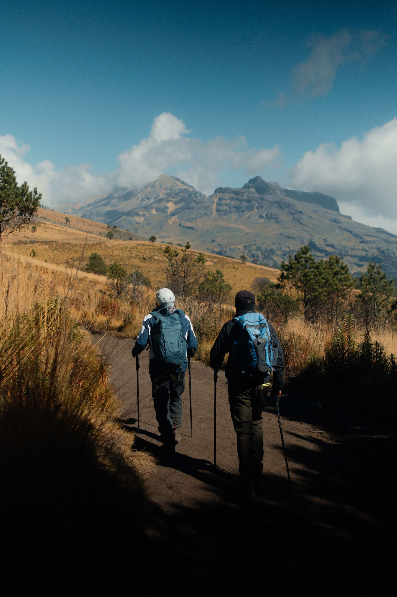
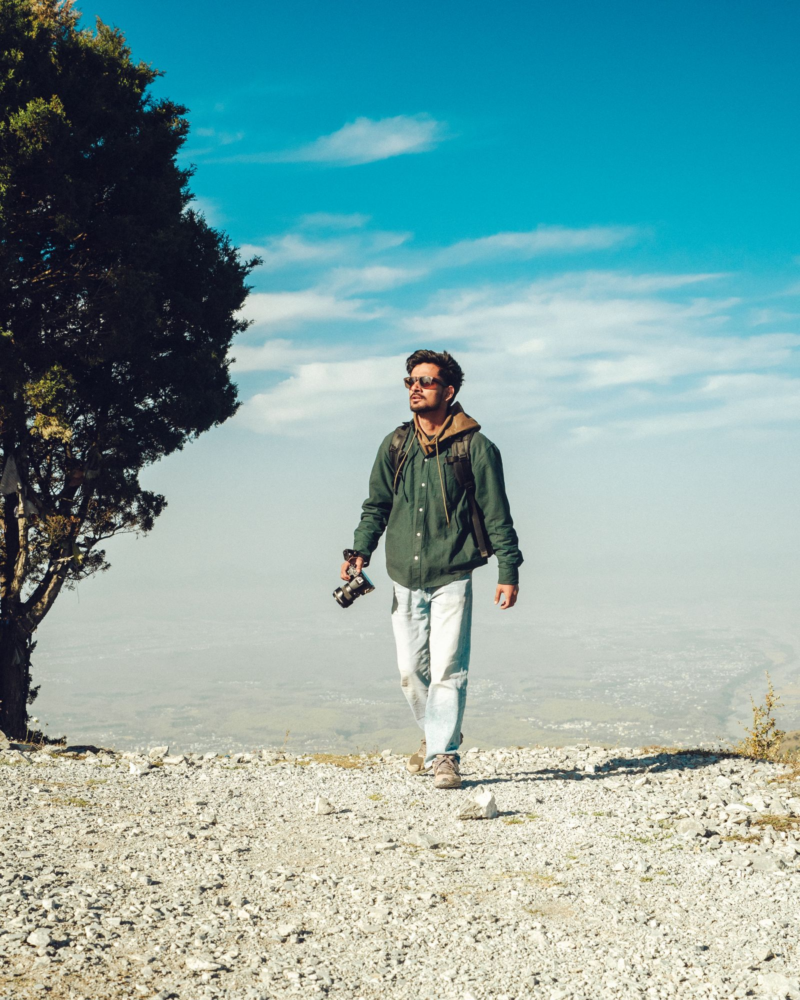

ITALY
8 days · 6–10 travelers · Local guide
The Italian High Route
From $2,450
For the beautifully restless.
Less following the crowd.
More finding your own way.
WHAT’S YOUR KIND OF ADVENTURE?
Good things are out there.
8 days · 6–10 travelers · Local guide
 PORTUGAL
PORTUGAL7 days · 6–10 travelers · Local guide

PERU10 days · 6–10 travelers · Local guide
A different way to see the world.
The small bakery your guide grew up visiting. The path that doesn’t show up on an app. The dinner that becomes a three-hour conversation. We travel for the things you can’t put on an itinerary.

FIELD GUIDE NO. 013A week to remember
Our Italian High Route winds through quiet alpine villages, flower-filled meadows and some of the most dramatic mountain scenery in Europe.
Meet your local guide in Bolzano, settle into a family-run inn and take a gentle walk through the foothills.
Follow high trails between mountain huts. Long views, good lunches and time to take it all in. Routes are adapted to the group.
Descend through forest and old villages, with an unhurried final dinner and space to share the stories you will take home.
The Nomad way
01 / PEOPLE
Our guides call these places home. Their knowledge, friendships and favorite corners shape every trip.
02 / PACE
Thoughtful plans with enough space for a second coffee, a longer walk or a conversation worth having.
03 / PURPOSE
Small groups, independently run stays and a considered approach to the places that welcome us.
Postcards from the path
ON THE ROAD / 6 MIN READ
A guide’s perspective on leaving a little space in the plan.
Some of the best moments arrive between the planned ones. An invitation to sit for a coffee. The light changing across a valley. A question that turns into a conversation.
Our guides leave room for these moments. The route matters, but so does the freedom to stay a little longer when a place asks you to.
“I went for the mountains. I came home with new friends, a thousand stories and a different perspective.”
The next good story is yours.
Tell us a little about your kind of adventure.
We’ll help you find a path that feels right.